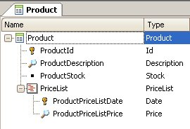
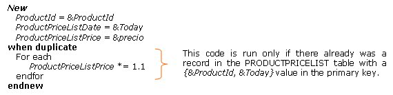

This command allows you to add a record in a table in the database. The extended table concept is not used here – the command works by adding a single record in a single physical table (even with the 'blocking clause'). We have a “Product” transaction for storing the information concerning the products we manage in our system, with its corresponding price list. The structure is as follows:  From this structure, GeneXus creates two tables: PRODUCT and PRODUCTPRICELIST, each one corresponding to a level in the structure. As seen before, the PRODUCTPRICELIST table will have three attributes: ProductId, ProductPriceListDate and ProductPriceListPrice, with primary key {ProductId, ProductPriceListDate}. Let's say we want to implement a procedure that performs the following: for the product whose code is received as a parameter, it adds the new price (also received as a parameter) to its price list, for the date corresponding to the day the procedure is executed. Within its rules section, the procedure will include: Parm(&ProductId, &price); Then, in Source we will type: New ProductId = &ProductId ProductPriceListDate = &Today ProductPriceListPrice = &price EndNew Note that within the “new” command there are assignment commands, where each attribute in the table where the record is intended to be insterted is given a value. In this case, we want to insert a record in the PRODUCTPRICELIST table and, through the assignments, we specify the value that we want the attributes to take from said table for that record. Identifying the "new" command tableHow does GeneXus understand that the table where we want to insert the record is the PRODUCTPRICELIST table if we don’t mention this? Every time GeneXus encounters a “new” command, it must identify the table where the record will be inserted. This table is identified on the basis of the attributes that appear within the “new” command, on the left in an assignment, along with the attributes apperaing in the 'Defined by' clause, if exists, and it’s referred to as the base table of the "new" command. In the example, there are three attributes appearing within the "new" command on the left in the assignment command. They would identify the table. GeneXus will look for a physical table that contains all these attributes. Should such table not exist, upon specification of the procedure, an error message regarding the situation will be displayed in the navigation list and the object will not be generated. In this case, there is a single table containing ProductId, ProductPriceListDate and ProductPriceListPrice: the PRODUCTPRICELIST table. Duplicate controlWhat happens if we run the above procedure twice on the same day for the same product? That is, if we try twice to add a record in the PRODUCTPRICELIST table with the same primary key values. Only one record will be inserted, since the “new” command performs a duplicate control. That is, when attempting to insert a new record, it is previously checked whether there already is a record in the table with the same primary key value as the one we’re attempting to insert. If there are candidate keys – defined through unique indices – value uniqueness will also be checked. Therefore, if there already is a record in the table with the same candidate key as the record we are attempting to insert, this will not be inserted either. The “new” command has an optional clause: the "when duplicate" clause. With this clause, the action to be performed if the record is duplicated – whether in its primary key or its candidate key – is programmed. For example, let’s assume the product already has a record in its price list corresponding to today's date, but then we want to increase the existing price by 10%. To this effect, we add the “when duplicate” clause to the “new” command:  Here, we’re updating the value of the ProductPriceListPrice attribute in case the record is duplicated. That is, if there already is a record in the table with the &ProductId and &Today values in its primary key, then, the price is updated by increasing it by 10% for this record. Note that in order to update the attribute, the assignment was placed within a For Each command (X Evolution 2), which may not seem intuitive at first. It’ll probably seem more intuitive to type the above without the "for each" command: New ProductId = &ProductId ProductPriceListDate = &Today ProductPriceListPrice = &price when duplicate ProductPriceListPrice *= 1.1 endnew Given that if the commands are executed within the “when duplicate” clause it’s because the insertion failed, we would already be positioned in the record existing in the table. Therefore, it would be unnecessary to specify a “for each” command in order to access the record. However, the above specification is not correct, and it will result in the price update for that record not being performed, that is, it would be as if not including the “when duplicate” clause. The “for each” command is the only command allowing us to access the database, whether for queries or updates. Therefore, although when entering the “when duplicate” clause we’re already positioned in the record we are intending to update, the assignment should still be done within a "for each" command. Should a “when duplicate” clause not be specified for a “new” command, if the record to be inserted is duplicated, no action will be preformed and the execution will continue to the next command. That is, since the record cannot be inserted because there already is one, nothing is done and the process continues.
|
| Backlinks |
| New command |